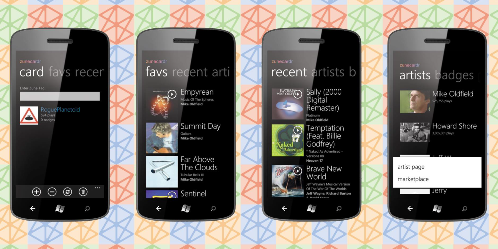
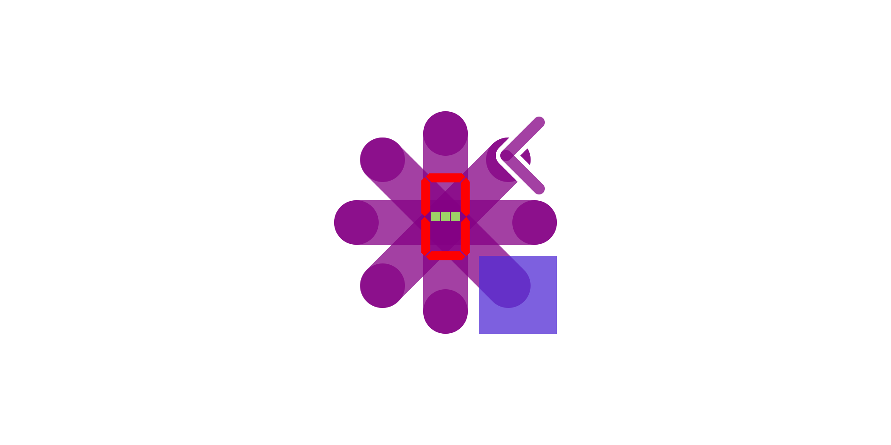
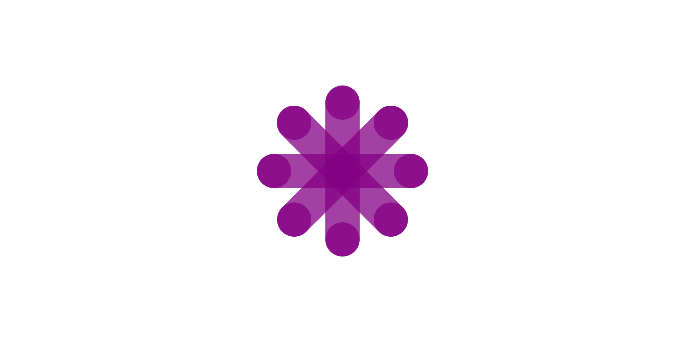
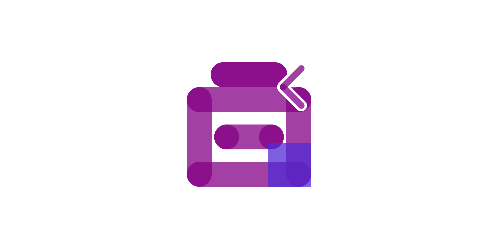

RoguePlanetoid Weekly Update #74
27th October 2024

This week saw the Microsoft AI Tour London which I wrote an Article about for the Keynote, I missed
out both on the in-person event and digital event due to the late noticed about the event but glad was able to catch that, it was an amazing event last year and will hopefully
get to see the event in full next year if I can. There was also the Windows Dev Chat which I also covered with an
Article which is a great way of keeping everyone informed publicly, but have found the calls I get involved with as a
Microsoft MVP really interesting and informative but am unable to mention anything discussed until it has been made public!
This week it was also great to go along to Silicon Mingle and see and speak to everyone there including catching up with familiar faces as well as meeting
some new people there too, it is always a really great event to go to and a good way of finding out what is going on, as well as be able to share what everyone is doing and
was great to see people who wished me well about the new job and our event last week. This week also marked fourteen years since Windows Phone 7 was announced that had a
massive impact on my career as well as my personal life, I always think fondly of those times and it is thanks to Silicon Mingle I know there were many of us developing
for Windows Phone here in the North East I didn't know about at the time, so was great to know I wasn't alone up here after all thanks to that!
Next week will see the release of the next Episode of the RoguePlanetoid Podcast about ASP.NET Core. I have been
working with ASP.NET in one form or another for many years and has been the most common platform I've used as a professional developer, but for personal
projects is has always been mostly Windows Desktop development but I have at times been able to combine the two with some interesting applications of
technology supported in .NET and something I'd not yet covered on the Podcast, although I have covered
Blazor before which I briefly cover again in this upcoming Episode!
Windows Phone 7 launched 14 years ago
21st October 2024

Today marks fourteen years since Windows Phone 7 was released on October 21st here in the UK and other parts of the world.
It was amazing to go to a mobile phone shop as soon as it opened that day to pick up my very first Windows Phone, the HTC HD7 which I had
been waiting for since it was announced. The first thing I did was install my app, ZuneCardr
as I was lucky enough to be on the early access programme for developers and had one of the first thousand apps available for the platform at launch!
I had developed ZuneCardr, that brought the Zune Cards from Zune Social using just the emulator
mostly that came with the fantastic developer tools and experience so was able to get by, but there was a chance a few weeks before launch to travel
down to Manchester from the North East of England to try it out on a prototype Samsung Taylor device to see if my app worked fine, which it did with
just a couple of minor issues that I resolved and thankfully worked when I installed my app for the very first time fourteen years ago today!
Windows Phone 7 was an amazing platform, but of course it was not to be and it was very hard to compete with Android
and iOS which dominate then as they do now, but lots of innovations such as live tiles, much like today's widgets and always on
displays, wireless charging and high resolution cameras first appeared on Windows Phones, I owned many more handsets right up to the demise of
Windows Phone 7, it's successor Windows Phone 8 and the newer Windows 10 Mobile that also didn't
make it, but was always proud to be a Windows Phone owner and developer plus it is wonderful to think of all the things that I did
thanks to that experience all those years ago!
RoguePlanetoid Weekly Update #73
20th October 2024
This week saw my very first event I've ever been part of organising for Cluarantonn and it was amazing to have everyone there, including the speakers and those
coming along who were interested in hearing more about the podcasting community here in the North East of England, I appreciate everyone who came
along and if you want to find out more about the talks, including my own from the event then you can check out my Article about
Podcast Paddock!
This week saw the first Workshop Wednesday on tutorialr.com for while with the release of a
Workshop to create a Windows Widget. In this
Workshop you will learn how to create a customisable Countdown Widget where you can select from a set of types
that show an emoji that is used to set the colour scheme of the timer which can be a segment or matrix display along with the date, time and name
of the countdown. Hopefully this Workshop will act as a great introduction for many to get started building their own
Windows Widget.
Next week I'll be making a start on my next project, which will be something that I hope will be of interest to many and help many on their developer journey,
and will be sharing more about it in the near future but am looking forward to the challenge of doing something new, but also that is inspired by the
many things I've done before and more recently!
tutorialr.com Workshop Wednesday - Windows Widget
16th October 2024

It is Workshop Wednesday and tutorialr.com has been updated
with a new Workshop for a Windows Widget that you can try!
Windows Widget is a Workshop that shows you how to create a Countdown Widget for Windows 11
using .NET, C# and Windows App SDK to implement a Widget Provider delivering a Widget
using Adaptive Cards.
The Countdown Widget supports Customisation to set the Type of the Countdown
using Emoji which also controls the colour scheme of the Timer which can be either a Seven-Segment Display or Five-by-Seven Dot-Matrix Display.
You will also be able to set the Name along with the Date and Time for the Countdown and when it completes it
will show a Toast notification.
You can also get the Workshop along with the Code for the Workshop on GitHub.
RoguePlanetoid Weekly Update #72
13th October 2024
This week saw me start a new job at Luminous XR as a Full-Stack Developer! It is a great opportunity
to work on their web-based platform as well as get the chance to try out VR and AR experiences from time to time, it is still quite surreal to see people performing tasks in
VR but when you're doing it yourself it is really incredible, it was just my first week but hope to bring my experience as well as the chance to learn more things, and have
always been interested in that sector and pleased it is quite different to some of the sectors I have been in before.
This week was also a chance to work on a new project which was a new Workshop for tutorialr.com for a
Windows Widget, it is a chance to create your very own Countdown Widget, although there's one in Windows now, this one has a
fun look-and-feel using an Emoji to indicate the type of Countdown. It even uses the colour scheme from the Emoji and has the
potential to add more types of Countdown to extend upon the Workshop plus you can pick the Display to use from
either a Seven-Segment Display or Five-by-Seven Dot-Matrix Display. I have enjoyed putting together the Countdown Widget and
the Workshop and look forward to giving others the opportunity to learn how to put together their own Widget for Windows,
you'll be able to see and follow the Workshop for yourself this Workshop Wednesday!
Next week sees the very first event I've every been part of organising, as part of Cluarantonn, on Thursday 17th October
between 7pm and 9pm which is Podcast Paddock where you can saddle up for an evening of podcasting partnerships for new or existing podcasters, small business
owners and freelancers to gallop towards collaboration and growth! The horse related puns are due to the event being held at Haylofts in Newcastle upon Tyne, so if you're
free this Thursday to come along then you can sign up via Eventbrite
and we'll see you there!
RoguePlanetoid Weekly Update #71
7th October 2024
Last week was another busy week but this time working on a brand-new project, a new Workshop for tutorialr.com
which I'll be releasing later this month. It will be great to have a Workshop Wednesday again as has been a couple of years since the last one but won't
hopefully be the last one for as long. This new Workshop will be about building your own Windows 11 Widget, I enjoyed putting together the
example for the Workshop and am hard at work writing it up now! I also released the latest episode of the RoguePlanetoid Podcast about
Microsoft MVP Award where I talk about my journey to become a Microsoft MVP and aspire to inspire others to do the same.
Last week saw updates to Packages including Comentsys.Toolkit which is one of my Toolkits where I added some
helpful methods for managing SVGs including Base-64 support plus updates to Packages for Assets
including Comentsys.Assets.FluentIcons and Comentsys.Assets.FluentIcons.Filled where I added support for a method to get the Path Markup
for the Assets, which will allow them to be used on platforms that support this in XAML such as .NET MAUI and Uno Platform.
I also released a brand-new Packages of Assets which was Comentsys.Assets.Display
which supports a Seven-Segment Display and Five-By-Seven Dot Matrix Display, this and the SVG functionality may form a part of that Workshop!
This week will be one for a change, but it will help to do this and am looking forward to it and will share more about it next RoguePlanetoid Weekly Update,
but it has been great to work on so many different things recently and will continue to do so, even if it takes a bit longer to get there, I know I will but I'm also looking
forward to continue to work on the Workshop I have been developing and some updates to other things I have been doing too, along with other projects too!
Comentsys.Assets.Display 1.0.0 Released
1st October 2024

Today sees the Release of version 1.0.0 of my new Assets package
of Comentsys.Assets.Display for .NET Standard 2.0 on both NuGet and open-source on
GitHub. This Initial Release of this Asset Resource
uses SVG or Scalable Vector Graphics for a Segment or Seven-Segment Display and Matrix or
Five-By-Seven Dot Matrix Display.
It is great to release a brand new Assets package using .NET Standard 2.0 that provides a Display using Segment and Matrix.
This will allow applications using NET Standard to represent values from 0 to 9 along with : and -
plus a Blank or Filled output for a Seven-Segment Display or Five-By-Seven Dot Matrix Display.
Comentsys.Assets.FluentIcons & .Filled 1.1.0 Released
1st October 2024

This week sees the Release of version 1.1.0 of Comentsys.Assets.FluentIcons
on NuGet and open-source on
GitHub with a new Method for GetPathMarkup and
version 1.1.0 of Comentsys.Assets.FluentIcons.Filled on
NuGet and open-source on
GitHub also with a new Method for GetPathMarkup.
These updates to include the Method for GetPathMarkup will help make it easy to use Microsoft Fluent UI System Icons
in platforms using Path Markup Syntax for Path Geometry with XAML such as Windows Presentation Foundation, Win UI and .NET MAUI along with
others like Uno Platform!
Comentsys.Toolkit 1.2.1 Released
1st October 2024

Today sees the Release of version 1.2.0 of my Toolkit of Comentsys.Toolkit for .NET Standard
on both NuGet and open-source on
GitHub. This Release adds more support for Asset Resources
including more methods to help implement third-party Asset Resources from a Stream or String along with Methods
for ToSvgString and ToBase64EncodedSvgString to allow an Asset Resource to be output them as an SVG including with Base-64 Encoding
There was a 1.2.0 version but realised after releasing that GetBase64EncodedString helper Method may cause some confusion so this was updated
so that it would only be visible to anything inheriting AssetBase for any third-party Asset Resources using the Comentsys.Toolkit.
Being able to use Assets more easily was the main aim of this release and they can now be used across all existing Packages for Asset Resources.
RoguePlanetoid Podcast - Episode Twenty One - Microsoft MVP Award
1st October 2024

Today sees the release of Episode Twenty One of the RoguePlanetoid Podcast
about Microsoft MVP Award, Microsoft MVP Award celebrates outstanding community
engagement, advocacy and knowledge sharing of Microsoft's products and services.
You will find the Podcast where you listen to your podcasts such as Spotify,
Amazon Music, RadioPublic, Apple Podcasts, Pandora,
YouTube Music along with YouTube where you can catch up with previous episodes
and Subscribe or Follow so you don't miss any future Episodes.